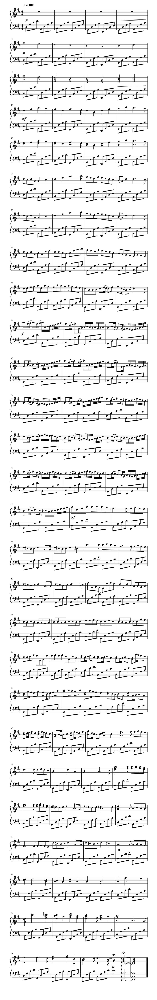

Volver
Volver
CANON EN RE
El Canon y giga en re mayor para tres violines y bajo continuo; en el original alemán: Kanon und Gigue in D-Dur für drei Violinen und Basso Continuo, también conocido simplemente como el Canon, es la obra más conocida del compositor alemán de música barroca Johann Pachelbel.
